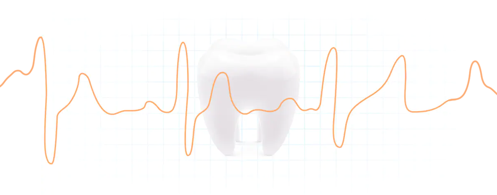

Xiaomi Oclean Air Sonic Smart Touchscreen
Умная зубная щетка Oclean Air
Электрическая зубная щетка Xiaomi Oclean Air обеспечивает эффективный и качественный уход за ротовой полостью. Щетка обладает удобной эргономикой и приятным современным дизайном. Мобильное приложение Oclean предоставит полную информацию о процедуре чистки и поможет подобрать оптимальный режим ухода.
Высокоскоростной мотор
Щетка оснащена мощным мотором, который производит до 40 000 колебаний в минуту и полностью передает вибрации на чистящую головку. Благодаря увеличенной мощности щетка способна качественно и деликатно удалить налет и грязь даже из труднодоступных мест.
-
5.5ммАмплитуда колебаний
-
40 000об/минМощность мотора
-
220гс/смСила отбеливания
Чистящая головка
Специальный дизайн насадки и щетинки DuPont оптимальной жесткости с плотным размещением способствуют более эффективному удалению остатков пищи и прочих загрязнений. Щетинки легко проникают в щели между зубами, очищают отложения с тыльной стороны зубов, полируют зубную эмаль, возвращают зубам естественный цвет.
Защита эмали и десен
Xiaomi Oclean Air имеет специальный датчик давления, который определяет, когда вы слишком сильно воздействуете на зубную эмаль. В этом случае щетка автоматически снижает уровень вибрации, чтобы не допустить травмирования зубной эмали и десен.
Удобное приложение
Синхронизируйте щетку Xiaomi Oclean Air с мобильным приложением Oclean, и получайте содержательные отчеты о качестве очистки и напоминания о необходимости сменить насадку, устанавливайте индивидуальные настройки и подбирайте персональные планы чистки, чтобы добиться лучшего эффекта.
Водозащита
Корпус зубной щетки защищен по стандарту IPX7, а значит она не боится брызг и даже кратковременного погружения в воду.
Автономная работа
Высокоемкий аккумулятор гарантирует до 30 дней работы Xiaomi MiJia Sound Electric Toothbrush на одном заряде. Поместите зубную щетку на зарядную станцию, и уже через 2 часа она будет готова к работе.